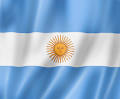

| the world cup and football(soccer) | Food & Culinary Traditions | Extreme Geography & Nature | culture and landmarks | science and dinosaurs |
|---|---|---|---|---|
| World Cup Champions: Argentina has won the FIFA World Cup three times, with victories in 1978, 1986, and most recently in 2022. | The Asado Ritual: The asado (traditional barbecue) is a cornerstone of social life, focusing on premium cuts of beef slow-cooked over wood fires. | The Highest Peak: Mount Aconcagua, located in the Mendoza province, is the highest mountain in the Western Hemisphere at 22,837 feet. | Birthplace of Tango: The sensual Tango dance and music style was created in the late 1800s within the working-class port neighborhoods of Buenos Aires. | Land of the Giants: Argentina is world-famous for its massive dinosaur discoveries, including the Patagotitan, one of the largest land animals to ever walk the Earth. |
| Legendary Players: The country produced two of the greatest football players in history: Diego Maradona and Lionel Messi. | National Infusion: Yerba mate is a highly caffeinated herbal tea that locals drink daily out of a shared gourd with a metal straw called a bombilla. | The Giant Waterfall: Iguazú Falls in the north features 275 individual waterfalls stretching across nearly two miles of subtropical rainforest. | The Widest Avenue: Buenos Aires is home to Avenida 9 de Julio, which has up to 14 lanes of traffic and spans a full city block wide. | Nobel Prize Achievements: The country boasts three Nobel Prizes in the sciences (Medicine in 1947, Chemistry in 1970, and Medicine in 1984), the most of any Latin American nation. |
| The Superclásico Rivalry: The match between Buenos Aires clubs Boca Juniors and River Plate is considered one of the most intense sports rivalries in the world. | Sweet Obsession: Dulce de leche (a thick milk caramel) is the country's most popular sweet, used to fill cookies called alfajores. | The End of the World: The city of Ushuaia is located at the southernmost tip of Argentina and is globally recognized as the southernmost city on Earth. | The Golden Sun: The central feature of Argentina’s flag is the Sol de Mayo (Sun of May), a gold emblem representing the Inca sun god, Inti. | Ozone Layer Pioneers: Argentine scientists at Marambio Base in Antarctica have been global leaders in tracking the hole in the Earth's ozone layer since the 1980s. |